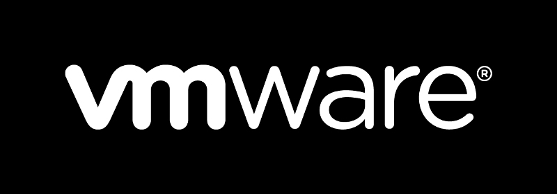
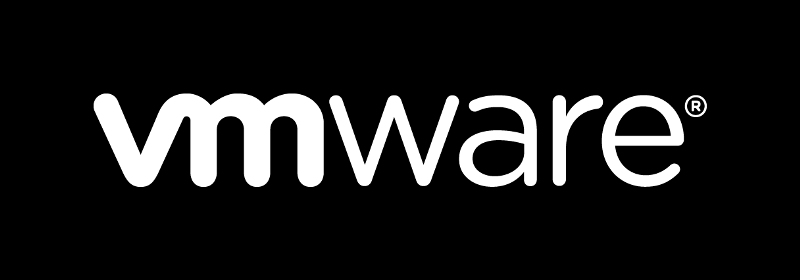

Mes compétences
Bash

Debian

-
Linux

-
CSS

-
HTML

-
VMware
 -
Visual Studio Code

-

66, rue Chevalier Paul
13002 Marseille
crystal.destailleurs@laplateforme.io
064870585
J'ai repris les études dans le cadre d'une reconversion professionnel car je voulais me diriger vers un métier dans la cybersécurité en tant que pentester.
Paul Valéry, 2016
Paul Valéry, 2015
- Employé Polyvalent 2021/2023
- Employé Polyvalent 2020
- Chef de rang 2019/2020
- Chef de rang 2016/2017
- Chef de rang saisonnier 2015
- Chef de rang 2013/2014
Bash
Debian
Linux
CSS
HTML
VMware
Visual Studio Code